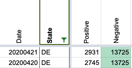
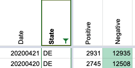

Negative test count in Delaware on 4/21/20
From support email:
April 21 and 22 for Delaware (https://covidtracking.com/data/state/delaware#historical) look off
Was there really a negative New Test count on April 21?
From support email:
April 21 and 22 for Delaware (https://covidtracking.com/data/state/delaware#historical) look off
Was there really a negative New Test count on April 21?
On April 21, DE revised down its negatives from 13,725 in the afternoon to 12,935 that evening. In a press release, DE explains this is because they accidentally calculated figures for April 19-20 including non-Delaware residents. The correct figure for April 19 (which is reported April 20) should have been 12,508, and for April 20 (which is reported April 21) was indeed 12,935.
https://news.delaware.gov/2020/04/21/public-health-announces-10-new-deaths-186-additional-positive-cases-of-covid-19/
Based on slack records, we picked up the change to 12,935 on April 21 and did not update until April 22, because it appeared as if negatives were going down we were not sure if it was an error. On April 22, we revised down to 13,353 when the changes persisted. Thus, in our records, it appears as if the total number of tests goes down. However, with the additional context of the 12,508 figure from the press release which should have been on the dashboard 4/20, there was never any revision that resulted in a negative delta.
So to reflect DE’s remarks in their press release, I’ve gone back and changed the negative numbers for April 20 & 21 from 13,725 and 13,725 to 12,508 and 12,935 respectively.
Before 
After 